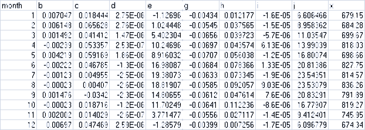

IV. Required Input Data Files for VELMA Simulations
The primary input file for a given simulation run is an XML file of initialization parameters known as the simulator configuration file (often abbreviated as the "simconfig" or "the XML" file). In addition to the simulator configuration file, the following data files must be complete and available for the VELMA Simulator to run:
| FILE | TYPE | CONTAINS |
| Flat-Processed DEM | Spatial / Grid ASCII (.asc) | Elevation in meters |
| Cover Species ID Map | Spatial / Grid ASCII (.asc) | Cover Species ID integers |
| Cover Species Age Map | Spatial / Grid ASCII (.asc) | Cover Species age in years |
| Soil Parameters ID Map | Spatial / Grid ASCII (.asc) | Soil Parameterization ID integers |
| Precipitation Driver Data | Temporal / (.csv or .txt) | Precipitation per in mm |
| Air Temperature Driver Data | Temporal / (.csv or .txt) | Air Temperature in degrees C |
If your simulation is using the optional spatially-explicit weather model, the following files must also be complete and available:
| FILE | TYPE | CONTAINS |
| Head Index Map | Spatial / ESRI Grid ASCII (.asc) | Heat index values |
| Precipitation Coefficients | Tabular (.csv) | Coefficient values |
| Air Temperature Coefficients | Tabular (.csv) | Coefficient values |
Finally, the following files are not required for the VELMA Simulator to run, but providing them for a simulation run is recommended. Their availability allows the simulator to provide more run-time information and some additional results data. (E.g. The VELMA Simulator can only compute a Nash- Sutcliffe coefficient value for a simulation run's runoff data if the Observed Runoff data file was provided as part of the input data).
| FILE | TYPE | CONTAINS |
| Observed Runoff | Temporal (.csv or .txt) | Observed runoff in mm |
| Observed Stream Chemistry | Temporal Tabular (.csv) | Observed chemistry values |
1. "Simulator Configuration" and "Simulation Configuration" are both used as the term for this primary file. The former emphasizes the fact that the file's contents configure the simulator, while the latter emphasizes the (equally true) fact that the file's contents form a particular configuration of a given simulation scenario.
The Simulator Configuration file specifies the Names of all other input data files.
When you run a VELMA Simulation, the simulator engine is given the simulator configuration file. The first thing the simulator engine does is initialize itself, using the key-value pairs in the file. Each of the required or optional files mentioned above is present as a key-value pair in the simulator configuration file.
| FILE | CONFIGURATION ID KEY |
| Flat-Processed DEM | /calibration/VelmaInputs.properties/input_dem |
| Cover Species ID Map | /calibration/VelmaInputs.properties/coverSpeciesIndexMapFileName |
| Cover Species Age Map | /calibration/VelmaInputs.properties/coverAgeMapFileName |
| Soil Parameters ID Map | /calibration/VelmaInputs.properties/soilParametersIndexMapFileName |
| Precipitation Driver Data | /weather/SpatialWeatherModel/rainDriverDataFileName |
| Air Temperature Driver Data | /weather/SpatialWeatherModel/airTemperatureDriverDataFileName |
| Head Index Map | /weather/SpatialWeatherModel/heatIndexMapFileName |
| Precipitation Coefficients | /weather/SpatialWeatherModel/rainCoefficientDataFileName |
| Air Temperature Coefficients | /weather/SpatialWeatherModel/airTemperatureCoefficientsDataFileName |
| Observed Runoff | /calibration/VelmaInputs.properties/input_runoff |
| Observed Stream Chemistry | /calibration/VelmaInputs.properties/input_stream_chem |
ID keys for required input data files must have the name of an existing, valid and readable file specified, while optional input data files ID keys may be left blank.
2. Sometimes just the name and extension of the file will do, sometimes the fully-specified path must be included as part of the name, and sometimes the path is optional. This unfortunately-confusing state of affairs exists due the history of the Simulator's development. For the input data files discussed here, supply only the name and extension as an ID Key's value.
The Simulator Configuration file specifies the Location of all other input data files.
The simulation configuration specifies the location of a directory (a.k.a. "folder") and the VELMA simulator engine looks in that directory for the input data files specified by the appropriate ID Keys (as listed in the previous table). The simulation configuration uses two, separate ID Keys to specify one fully-qualified path + directory name:
| Location Path | /startups/VelmaStartups.properties/inputDataLocationRootName |
| Directory Name | /startups/VelmaStartups.properties/inputDataLocationDirName |
The fully-qualified location of input data files is Location Path + "/" + Directory Name. For example, the following ID Key values:
| ID Key | Value |
| /startups/VelmaStartups.properties/inputDataLocationRootName | C:/MyVELMA_InputData |
| /startups/VelmaStartups.properties/inputDataLocationDirName | LittleMtn_Watershed |
… indicate that the VELMA simulator should look for input data files in this directory: C:\MyVELMA_InputData\LittleMtn_Watershed
IMPORTANT NOTE
The example above uses Microsoft Window file system "back slash" separators, however you should ALWAYS use "forward slash" (a.k.a. Unix-style) separators when specifying path name values for the simulator configuration's ID Keys.
Given the fully-qualified input data location in the example above, suppose the LittleMtn_Watershed's DEM file name (for ID Key /calibration/VelmaInputs.properties/input_dem) was specified as: LittleMtn_30m_DEM.asc
The VELMA simulator would attempt to open and read elevation data from the file:
C:\MyVELMA_InputData\LittleMtn_Watershed\LittleMtn_30m_DEM.asc
Details of Specific File Formats
Broadly speaking, the VELMA simulator needs two types of input or driver data: Spatial and Temporal. A spatialdata value is something associated with a particular cell location. A temporal data value is somethingassociated with a particular time step of a simulation run. Spatial data is nearly always input from files inESRI Grid ASCII format (.asc), while temporal data is input from files with either comma- separated value format(.csv), or simple text files (.txt)
ESRI Grid ASCII (.asc)
A raster GIS file format specified by ESRI. See this Wikipedia article for an overview: "ESRI grid"
http://en.wikipedia.org/wiki/ESRI_grid
Comma-Separated Value (.csv)
An informal, de-facto standard format that represents tabular data in a file as a sequence of lines (rows) of comma-separated values (columns). There is no formal standard for CSV data, but good overviews are provided by this Wikipedia article:
"Comma-separated values" http://en.wikipedia.org/wiki/Comma-separated_value And this RFC document:
"RFC 4180 - Common Format and MIME Type for Comma-Separated Values (CSV) Files" http://tools.ietf.org/html/rfc4180
Simple Text Files (.txt)
These are plain-text files of the sort created by Microsoft's Text Editor, or by saving a Microsoft Word document as "Plain Text".
Details of Specific Input Data Files
The Flat-Processed DEM File
A spatial data file (.asc) containing elevation values (in meters) for every cell in the simulation area. Theterm “Flat-Processed” indicates that the contents of the file have been pre-processed by the JPDEMflat-processing utility. The DEM file is the “master” film for a simulation run: all other spatially- explicitdata is assumed to have the same row, column, cell size and x, y offset values as the DEM file.
See “Appendix 7: Creating Flat-Processed DEM Data For The VELMA Simulator and Determining Outletand Watershed Delineation” for details on the use of the JPDEM.jar program to flat process a DEMfile.
The Cover Species ID Map File
A spatial data file (.asc) containing cover species ID numbers for every cell in the simulation area. The IDnumbers must be integers, and must correspond to one or more of the simulator configuration's
/cover/…/uniqueId ID Key values.
The Cover Species Age Map File
A spatial data file (.asc) containing ages (in years) for every cell in the simulation area. The age of a givencell in the file represents that cell's cover species' age in years at the simulation start year (specified inthe simulator configuration by the /calibration/VelmaInputs.properties/syear ID Key's value).
The Soil Parameters ID Map File
A spatial data file (.asc) containing Soil Parameterization ID numbers for every cell in the simulation area. The ID numbers must be integers, and must correspond to one or more of the simulator configuration's /soil/…/uniqueId ID Key values .
The Precipitation Driver Data File
A temporal data file containing a rain value in millimeters for each day of the simulation.
The data is formatted as one value per line in the file, and the file should have as many lines as there are days between the simulator configuration's specified forcing_start and forcing_end values.
For example, if the simulation configuration has the following values specified:
| ID Key | Value |
| /calibration/VelmaInputs.properties/forcing_start | 2000 |
| /calibration/VelmaInputs.properties/forcing_end | 2001 |
| /weather/SpatialWeatherModel/rainDriverDataFileName | MyRainData.csv |
… the VELMA simulator will expect the file MyRainData.csv to contain exactly 731 lines of data (366 days + 365
29.6500000
67.1500000
14.4000000
28.3250000
33.4000000
[ … ]
Notice that although MyRainData.csv is a .csv (comma-separated values) file, it has no header row, and no commas(because there is only one “column” of data). Notice also that there is leading whitespace in front of the datavalues; leading whitespace is not required, and is ignored.
Because there is no difference between a single-column, no-header-row, comma-separated values (.csv) file, and asimple plain text (.txt), the VELMA simulator will accept either a .csv or .txt file extension for theprecipitation driver file, although the .csv extension is preferred.
The Air Temperature Driver Data File
A temporal data file containing a value in centigrade for mean daily temperature (i.e., the average of daily Tminand Tmax) for each day of the simulation. The data is formatted according to the same rules as the precipitationdriver data file; one value per line, one line per possible simulation day.
The Heat Index Map File
A spatial data file (.asc) containing a heat index value for every cell in the simulation area. The heat indexvalue is computed from elevation, slope and other factors.
The Heat Index Map File is only required when the spatially-explicit weather model is used. Otherwise, the filemay be left unspecified in the simulator configuration.
The Precipitation Coefficients File
A comma-separated values (.csv) file containing a table of coefficients for the spatial weather model'sprecipitation equation. The file must contain 13 rows of 6 comma-separated values (columns) each.
The first row is a header row, and the remaining 12 rows provide values for the equation's a, b, c, d and ecoefficients for each month of the year.
Here is an example table of values:

and here are the lines from the corresponding .csv data file:
month,a,b,c,d,e
1,259.751,0.011833,5.24E-05,-3.94717,-0.09685
2,241.5404,0.006131,6.10E-05,-5.15183,0.892817
3,210.8037,0.037236,4.62E-05,-4.20577,0.951439
4,96.40946,0.080534,7.44E-06,-1.44569,1.250961
5,88.34944,0.014202,3.06E-05,-0.20094,1.259266
6,53.51838,0.048195,9.53E-06,0.873204,1.297879
7,13.08702,0.023576,2.49E-06,0.686924,0.685529
8,21.89397,7.78E-05,6.23E-06,-0.00893,0.199088
9,70.03036,0.007598,2.39E-05,-0.00868,0.959202
10,124.4332,-0.00302,3.59E-05,-1.16562,0.890761
11,316.075,0.072349,4.32E-05,-4.40543,1.247633
12,290.7049,0.034712,4.62E-05,-4.46288,0.495517
The Precipitation Coefficients File is only required when the spatially-explicit weather model is used.Otherwise, the file may be left unspecified in the simulator configuration.
The Air Temperature Coefficients File
A comma-separated values (.csv) file containing a table of coefficients for the spatial weather model's airtemperature equation. The file must contain 13 rows of 10 comma-separated values (columns) each. The first rowis a header row, and the remaining 12 rows provide values for the equation's a,..,j and x coefficients for eachmonth of the year.
Here is an example table of values:
and here are the lines from the corresponding .csv data file:
month,b,c,d,e,g,h,i,j,x
1,0.007047,0.018444,2.75E-06,-1.12696,-0.00434,0.012177,-1.60E-05,6.606466,679.15
2,0.006148,0.065628,2.75E-06,1.024448,-0.00545,0.037565,-1.50E-05,8.958362,684.28
3,0.001492,0.041412,1.47E-06,5.402304,-0.00656,0.039723,-5.70E-06,11.03547,699.67
4,-0.00239,0.053357,2.53E-07,10.24696,-0.00697,0.043574,6.13E-06,13.99039,818.03
5,0.004219,0.059169,1.86E-06,8.916032,-0.00707,0.056038,-1.20E-05,16.80074,698.66
6,-0.00222,0.046785,-1.30E-06,16.98087,-0.00684,0.078366,1.33E-05,20.81386,827.75
7,-0.00123,0.004955,-2.50E-06,19.38073,-0.00633,0.073345,-1.90E-06,23.54351,814.57
8,-0.00023,0.00407,-2.60E-06,18.81907,-0.00585,0.092057,9.03E-06,23.53079,836.26
9,0.001476,-0.0342,-2.30E-06,14.80655,-0.00612,0.047614,7.60E-06,20.83291,791.89
10,-0.00023,0.018716,-1.20E-06,11.70249,-0.00641,0.112236,-8.60E-06,16.77907,819.27
11,0.002002,0.014029,-2.60E-07,3.771477,-0.00556,0.027117,-1.40E-05,9.412401,745.95
12,0.00697,0.047469,2.59E-06,-1.28579,-0.00399,0.007256,-1.70E-05,6.096779,674.34
The Air Temperature Coefficients File is only required when the spatially-explicit weather model is used.Otherwise, the file may be left unspecified in the simulator configuration.
The Observed Runoff Data File
An (optional, but recommended) temporal data file containing a runoff value in millimeters for each day of thesimulation. The data is formatted according to the same rules as the precipitation driver data file; one valueper line, one line per possible simulation day. The VELMA simulator engine can run without an observed runoffdata file, but the Nash-Sutcliffe coefficient value automatically computed as part of the simulation resultswill be invalid if the observed runoff data is unavailable.
The Observed Stream Chemistry Data File
An optional temporal data file containing observed DON, NH4, DOC and NO3 loss values for each dayof the simulation. The data is formatted as four comma-separated values per line, one line per possiblesimulation day. The first five lines of an observed stream chemistry data file might look like this:
0.000409543,7.73582E-05,0.013059883,9.10096E-06
4.76427E-05,9.52854E-06,0.002572705,0
9.50966E-05,2.8529E-05,0.006276374,4.75483E-06
4.76506E-05,4.76506E-06,0.002001324,0
4.76506E-05,4.76506E-06,0.001620119,0
[ … ]
In this example snippet, the first day's observed loss values would be:
DON = 0.000409543
NH4 = 7.73582E-05 DOC = 0.013059883 NO3 = 9.10096E-06
Note that, like the Observed Runoff data file, there is no header row (initial line of column header titles) inthe observed stream chemistry file.